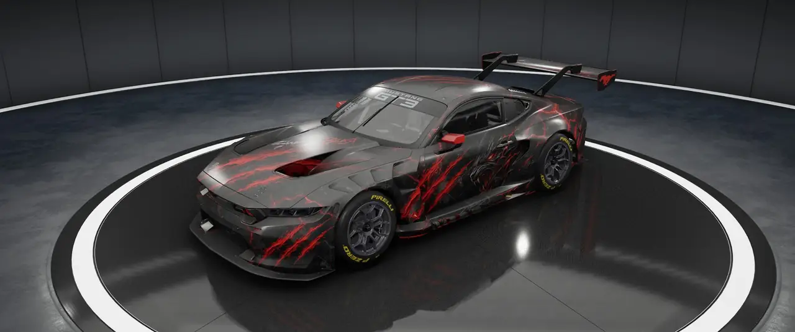
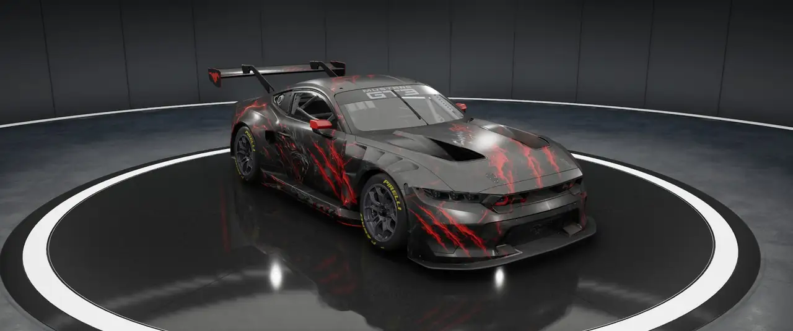
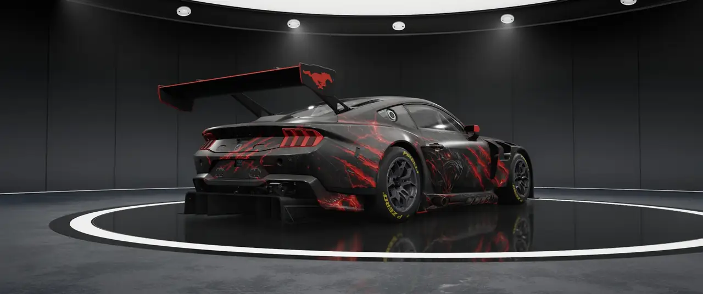
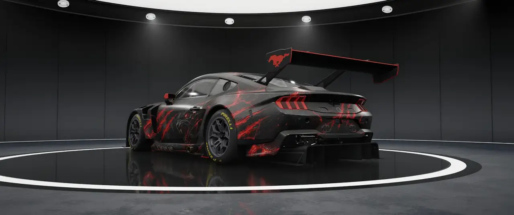
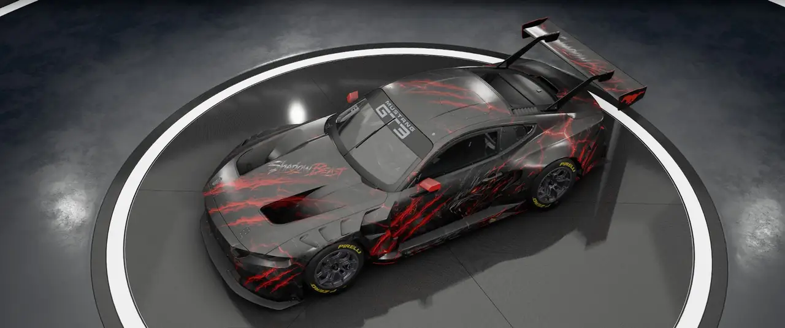
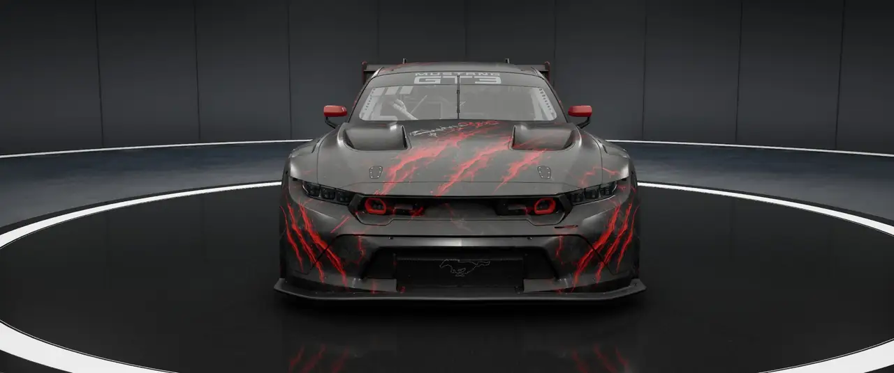

SIDS DESIGN GARAGE / CUSTOMER PROJECT
CUSTOM LIVERY DESIGN / FORD MUSTANG GT3
SHADOW BEAST.
FORD MUSTANG GT3 · ORIGINAL CUSTOMER LIVERY · 6 ANSICHTEN

THE PROJECT
DARKNESS MEETS BEAST.
Ein Ford Mustang GT3 mit eigenständigem Charakter: dunkles Grau, schwarze Flächen, aggressive rote Risse und das markante Shadow-Beast-Motiv an den Fahrzeugseiten. Die sechs Aufnahmen zeigen das fertige Kundenprojekt aus verschiedenen Perspektiven – mit unveränderter Original-Livery.
01 / 01 · CUSTOMER PROJECT
FORD MUSTANG GT3
SHADOW BEAST / ORIGINAL LIVERY





MEHR ENTDECKEN
ALLE LIVERIES →